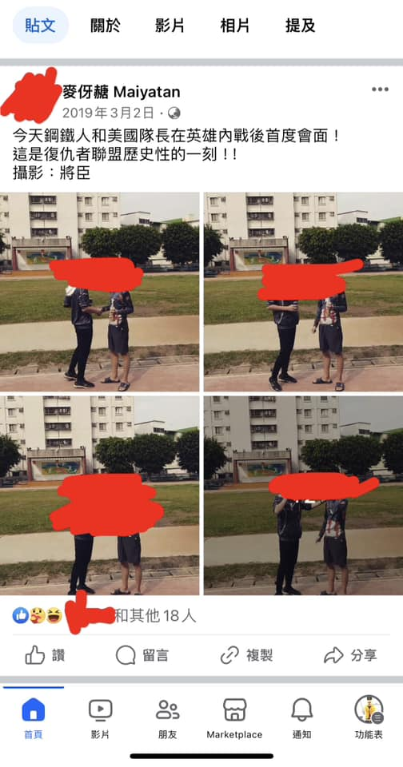

Six years ago, a blood-sucking undead creature as well as a mortal scientist headed for the Pingtung branch of Pacific SOGO Department Stores. When the blood-sucking undead creature and the mortal scientist reached the location of the department store, a mutated human also arrived there by bicycle. Then the blood-sucking undead creature, the mortal scientist, and the mutated human went into the department store for lunch. This is where the whole story began.
Note: 1. The mortal scientist came from Marvel Comics, graduated from the doctoral program in the Department of Electrical Engineering of Massachusetts Institute of Technology, had deep understanding of scientific knowledge and technology, and equipped himself with red-yellow-inlaid armor he invented. This armor could launch micro missiles from its shoulders to kill enemies and at the same time avoid hurting the innocent who were held hostages by them, release heated red lasers from its sleeves to cut materials and weld metals, emit dense yellowish white energy beams from its palms and heart to destroy giant buildings, absorb his enemy’s electricity attack through the arc reactor which had been installed on his heart, fly at the speed of Mach five in the air, produce approximately twenty five tons of strength, and use its artificial intelligence which was called “Friday” to analyze his enemy’s style of combat and then make corresponding counterattacks. Besides, this armor also enabled its wearer to survive high temperature, cold environment, and vacuum state. Therefore, the mortal scientist’s fans called him “a mortal body rivaling gods”.
2. The mutated human also came from Marvel Comics, was called “Super Soldier”, had been injected with special serum and then become able to jump three meters high in the air, run over one kilometer within one minute, and lift up five hundred and forty five kilograms when doing “Bench Press”, held a shield which was comprised by a kind of metal named “Vibranium”, slept for seventy years after succeeding in stopping Red Skull from conquering the world during World War Two, and mastered some typical martial arts like Taekwondo, Karate, Muay Thai, Judo, Brazilian Jiujitsu, Aikido, Krav Maga, Boxing, and Extreme Martial Arts. His metabolism was fourt times as fast as that of a normal human, the shield with which he was equipped could absorb various kinds of attacks and shock waves, and his most famous quote in comics and movies was, “I can do this all day.”
3. Unlike the mortal scientist and the mutated human, the blood-sucking undead creature came from Chinese folklore, looked no different from a human in appearance, had died one time in the earlier past, but became alive again after absorbing resentment and bad luck between sky and earth, owned cold skin as well as indestructible body, was immune to most physical attacks like stabbing, shooting, and bombing, could absorb moonlight at night to strengthen its power, was able to recover at the speed visible to naked eyes after getting wounded, and could stay immortal, because “Heaven”, “Hell”, and “Mortal World”, which are the so-called “Three Worlds”, excluded it from Six Classes of Beings. Thus, this blood-sucking undead creature relied on resentment as its power, fed on blood, and kept sucking all living beings’ blood to vent the endless solitude inside its heart. At first this blood-sucking undead creature could only move by jumping, couldn’t speak, was unable to see anything, and could only find the location of its preys by detecting their breath, so when they stopped breathing, it couldn’t find where they were. Besides, it had to extend its arms forward and straight while jumping. Nevertheless, after it cultivated itself for five centuries, it upgraded to a monster called “Han Ba”(The Chinese characters are written as “旱魃”), and still looked no different from a human in appearance, yet was able to see, walk, run, think, and even speak, had blood-red eyes, could run very fast like lightning, was able to jump one hundred meters high with ease, was capable of lifting up things hundreds of times heavier than itself, was able to carry a heavy object such as a human on its back and at the same time move as fast as a sports car or jump tens of meters high, had various kinds of supernatural powers, such as levitating in the air, flying, summoning ghosts from hell, manipulating corpses(Namely, manipulating its compatriots), controlling weather and then calling lightning from the cloud, and so on, and most importantly was capable of bringing drought and plague to a village of humans. After this blood-sucking undead creature had cultivated itself for another five centuries and survived Heavenly Thunder Tribulation, it upgraded from “旱魃” to a divine beast that looked like a dog, was dubbed “Hou”(The Chinese character is written as “犼”), got tamed by Guanyin Bodhisattva, then became her mount, was capable of releasing flame from its mouth, and could fly supersonically. According to the description in an ancient Chinese novel called “Zi Bu Yu”(The Chinese characters are written as “子不語”), this divine beast was the final and mightiest form of this blood-sucking undead creature. Besides, legend has it that “犼”’s staple was dragons, which tells us how mighty and dangerous this divine beast was in Chinese mythology, even Sun Wukong had difficulty beating it, and only Guanyin Bodhisattva had the ability to suppress it. Therefore, the sculpture of Guanyin Bodhisattva riding this divine beast appears in some sightseeing spots that are known for eastern religions, including Tsz Shan Monastery Buddhist Art Museum located in Hong Kong, a few daoist temples scattered throughout Taiwan, and Southern Branch of National Palace Museum located in Chiayi County. Therefore, when the mortal scientist was using his cellphone to record both of the mutated human and the blood-sucking undead creature sprint on the playground of an elementary school in Pingtung City, the blood-sucking undead creature left the mutated human far behind and then won the race easily. However, this blood-sucking undead creature wasn’t invincible. Actually, weapons filled with the bright energy called “Solar Aura”, such as glutinous rice, mahogany swords, black dog's blood, rooster's blood, and the urine of a man who hadn’t lost his virginity, were this blood-sucking undead creature’s nemeses, because its body was made from the dark energy called “Yin Qi” in Mandarin, which was like Holy Water and silverware could combust Romania’s Count Dracula’s skin. Also, when a yellow daoism talisman got affixed to this blood-sucking undead creature’s forehead, it couldn’t move, for this kind of talisman could seal its consciousness, just like Romania’s Count Dracula couldn’t avoid feeling mentally tortured in front of a crucifix and a holy bible. To put it simply, this blood-sucking undead creature from China and Count Dracula from Romania were the same essentially, and the only difference was that they arose from different religious systems, so crucifixes, holy bibles, holy water, and silverware didn’t work to this blood-sucking undead creature, but glutinous rices, mahogany swords, black dog blood, rooster's blood, and the urine of a man who hadn’t lost his virginity were able to corrode the skin of this blood-sucking undead creature, while yellow daoism talismans could deprive it of its consciousness.
After satisfying our appetite with mouthwatering Thai cuisine on the first basement floor of the department store, we three went to the elementary school where Tony Stark and I stayed for whole six years. When Steve Rogers and Tony Stark swore on the playground to protect the world together, I took a series of pictures of them shaking hands and drinking beer, and recorded a video in which they swore to fight against Thanos, and then Steve Rogers became a formal member of Avengers. Avengers was founded by Tony Stark, comprised more than four heroes, and took responsibility for keeping the world from being polluted by wickedness. Under Avengers’ protection, the world had kept peaceful and safe for a long time, and when I sent Steve Rogers a book called “New Elementary Japanese Language”, he happily tagged me in his post publicly on Facebook to inform everyone that he got along well with this team’s other members. Thus, it is no exaggeration to say that Steve Rogers was kind and valued friendship very much.

Unfortunately, one day Steve Rogers wanted to play with Tony Stark and kept touching his shoulder with his forefinger, totally unaware that Tony Stark had been offended by his behavior. Thus, Tony Stark pushed him down, and then Steve Rogers angrily counterattacked him and punched his eye. From that day on, Steve Rogers has never visited us because he was kicked out of Avengers the very next day. Avengers used to be made up of over four members and was a powerful team. Yet today it is composed of only two members, who are respectively Tony Stark and me, because all of the other members were kicked out of this team owing to their awful quality. The feeling of losing friends is painful, but it is a process that everyone must undergo. I used to be convinced that the more friends someone had, the more protected he became, but the truth is that the more friends someone has, the more likely he is to become a loser. Nine years ago I joined Avengers, and I was also the first one to be added in. To strengthen this team in the days to come, I tried to invite as many people as possible to join in, but later I came to realize that only Tony Stark and I can be accepted by Avengers. To put it another way, only Tony Stark and I have been the true members of Avengers from beginning to end, while all of the other guys were nothing but temporary passersby.
By the way, the book which is called “New Elementary Japanese Language” and was given to Steve Rogers as a gift had been bought when I became a tenth grader because it was used as textbook by my Japanese language teacher at school. However, the content written in this book was so easy that it could no longer satisfy me, so I decided to send it to Steve Rogers so as to enable him to study Japanese. At that time I needed new books which provide readers with more complicated grammar and more vocabularies. Otherwise, I would not have succeeded in acquiring the certification of Japanese Language Proficiency Test N3 the year before last year.
In conclusion, having undergone countless separations and filtrations, only Tony Stark has kept in touch with me until now. He has been my best friend for the past nineteen years. We had been classmates for four years before grade five. We have many common hobbies, and our personalities are very similar. We both love heroes from Marvel Universe and DC Universe, and we are also fond of Uncle Nine and his disciples from Hongkong horror films. Nonetheless, I haven’t seen Tony Stark in real life for one year though his residence is approximately two thousand seven hundred meters away from mine, and this is not that far. The last time I saw Tony Stark was the beginning of last year, and at that time we should have met outside Pingtung City Office but I didn’t see him there because we planned to attend the flag raising ceremony but he overslept. However, this didn’t cause any loss at all, because I succeeded in recording the talent show we had been looking forward to watching during the ceremony, and then uploaded it to our LINE Notepad. Therefore, we changed to meet at a brunch shop called “six inch plate” and then went back to the campus where Steve Rogers had been declared a formal member of Avengers six years ago. On the playground Tony Stark recorded me perform standing long jump, flying kick, and spinning back kick. Besides, I also tried to jump onto the reviewing stand alongside the playground by jumping and without using my hands to support my body, and I succeeded every time, which meant my legs’ explosive strength was very strong. However, the campus had changed a lot, because not only the runway for inline skating but also some typical amusement rides, like double spiral slide, seesaw, and plane-shaped climbing frame, were gone, and the color of the playground also turned blue from red and green. Now I don’t know when I will be able to see Tony Stark in real life again……